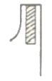
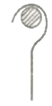
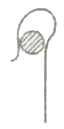
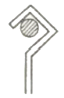
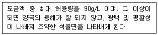

표면처리기능사 (2009-09-27 기출문제)
1과목: 금속재료일반
1. 다음 중 재결정 온도가 가장 낮은 금속은?
- Al
- Cu
- Ni
- Zn
(정답률: 57%)

2. 실온까지 온도를 내려서 다른 형상으로 변형시켰다가 다시 온도를 상승시키면 어느 일정한 온도이상에서 다시 원래의 형상으로 변화하는 합금은
- 제진합금
- 방진합금
- 비정질합금
- 형상기억합금
(정답률: 85%)
3. 잔류 오스테나이트를 마텐자이트로 변화시키는 열처리 방법은?
- 연속냉각 변태 처리
- 등온 변태 처리
- 항온 변태 처리
- 심랭 처리
(정답률: 73%)
4. 지름이 10mm인 인장시험편을 시험하여 파단 후 지름이 8mm가 되었다면 단면 수축률은 몇 %인가?(오류 신고가 접수된 문제입니다. 반드시 정답과 해설을 확인하시기 바랍니다.)
- 20
- 36
- 64
- 80
(정답률: 60%)
5. 면심입방격자의 배위수는 몇 개인가?
- 8
- 12
- 16
- 24
(정답률: 67%)
6. 피아노 선재, 레일 등을 제조할 때 사용되는 최경강으로 이 재료의 탄소함량으로 옳은 것은?
- 0.13∼0.20%C
- 0.30∼0.40%C
- 0.50∼0.70%C
- 1.50∼2.0%C
(정답률: 50%)
7. 금속재료에 외부의 힘을 가하여 원하는 형태로 변형시킴과 동시에 재료의 기계적 성질을 개선하는 가공법을 무엇이라 하는가?
- 용접
- 절삭가공
- 소성가공
- 분말 야금
(정답률: 92%)
8. 다음 중 저용융점 합금의(fusible alloy) 원소로 사용되는 것이 아닌 것은?
- W
- Bi
- Sn
- In
(정답률: 60%)
9. 다음 중 체심입방격자의 표시로 옳은 것은?
- LCC
- BCC
- COH
- FCC
(정답률: 71%)
10. 냉간가공과 열간가공을 구별하는 기준이 되는 것은?
- 변태점
- 탄성한도
- 재결성 온도
- 마무리 온도
(정답률: 75%)
11. 청동의 기계적 성질 중 경도는 구리에 주석이 몇 % 함유되었을 때 가장 높게 나타나는가?
- 10
- 20
- 30
- 50
(정답률: 70%)
12. 다음 중 내열용 합금이 아닌 것은?
- Y-합금
- 코비탈륨
- 로엑스(Lo-Ex)합금
- 톰백
(정답률: 68%)
13. 다음 중 영화아연욕의 특징으로 옳은 것은?
- 주물 등에 직접 도금이 잘 된다.
- 도금액 중에서 수소취성이 많이 생긴다.
- 액의 전도성이 낮아 욕전압이 높다.
- 시안화합물을 사용하므로 시안 폐수가 생긴다.
(정답률: 62%)
14. 다음 중 알칼리탈지에 있어 금속을 부식시키는 ph 값이 가장 큰 것은?
- 아연
- 철강
- 주석
- 황동
(정답률: 70%)
15. 황산구리 도금액에서 양극에 함인동판을 사용하는 이유로 가장 적절한 것은?
- 양극판의 소모가 적기 때문에
- 도금의 밀착성을 향상시키기 위하여
- 도금액의 전기전도도를 향상시키기 위하여
- 양극판에서 구리분말이 발생하는 현상을 줄이기 위하여
(정답률: 67%)
16. 와트액을 분석한 결과 염화니켈의 농도가 부족하였을 때 취해야 할 조치로 가장 적절한 것은?
- 광택제를 보충한다.
- 양극전류밀도를 높인다.
- 염산으로 ph를 조정한다.
- 억제제(inhibitor)를 더 첨가한다.
(정답률: 70%)
17. 다음 중 광택니켈도금에서 제1차 광택제의 주된 역할로 가장 적당한 것은?
- 피트를 방지한다.
- 광택을 향상시킨다.
- 표면의 ph 농도를 조절한다.
- 내부 응력의 증가를 감소시킨다.
(정답률: 53%)
18. 다음 중 이온화 경향이 가장 큰 금속은?
- Ni
- Zn
- Cu
- Fe
(정답률: 62%)
19. 강전해질 0.1M-HCl과 0.01M-BaCl2이 가지는 4개의 이온 농도가 틀리게 표현된 것은?
- HCl의 [H+]=0.1M
- HCl의 [Cl-]=0.1M
- BaCl2의 [Cl-]=0.01M
- BaCl2의 [Ba2+]=0.01M
(정답률: 72%)
20. 다음 중 용제탈지제가 갖추어야 하는 요건과 가장 거리가 먼 것은?
- 정도가 낮을 것
- 불연성이며, 인화성이 없을 것
- 도금 재료를 침식, 부식시키지 않을 것
- 유성(油性)에 대한 용해능력이 작을 것
(정답률: 75%)
2과목: 전기도금
21. 다음 중 전해연마의 특징으로 틀린 것은?
- 볼록한 부분이 쉽게 용해된다.
- 제품을 양극으로 하여 연마한다.
- 표면적이 큰 물품도 균일하게 연마를 할 수 있다.
- 음극은 납, 스테인리스 판, 탄소봉 등을 이용한다.
(정답률: 69%)
22. 다음 중 피로인산구리 도금액의 ph 범위로 가장 적절한 것은?
- 1∼2
- 3∼4
- 5∼6
- 8∼9
(정답률: 55%)
23. 다음 중 핀홀(pin hole)에 대한 방지대책으로 적절하지 않은 것은?
- ph 값을 5.5이상으로 조정한다.
- 약간 낮은 전류밀도로 작업한다.
- 전처리 작업을 조건에 맞추어 철저히 한다.
- 도금액의 교반을 좀 더 강하고 고르게 한다.
(정답률: 63%)
24. 전기화학반응에 이용된 전기량과 전기량계로부터 구한 전체 통과전기량의 비를 무엇이라고 하는가?
- 전류밀도
- 전류효율
- 분해전압
- 전기화학당량비
(정답률: 64%)
25. 다음 중 전처리 때 생긴 얇은 산화파악을 제거하여 표면을 활성 상태로 만들어 주는 역할을 하는 것은?
- 광택탈지
- 전해탈청
- 알칼리탈청
- 산담금
(정답률: 57%)
26. 도금 피막을 알아보는 시험방법으로 진한 염산에 침식되어 녹색이 되었다면 이는 어떤 도금으로 되어있는 것인가?
- 금도금
- 아연도금
- 크롬도금
- 니켈도금
(정답률: 74%)
27. 다음 중 크롬도금액을 만들 때 무수크롬산과 촉매로 쓰이는 것은?
- 황산
- 붕산
- 마그네슘
- 니켈
(정답률: 69%)
28. 다음 중 전기도금시 걸이(rack)와 모선(bus bar)의 접촉부분이 가장 잘 설계된 것은?




(정답률: 73%)
29. 도금한 제품에 페록실 시험(유공도시험)을 하는 것은 무엇을 측정하기 위한 것인가?
- 경도
- 내식성
- 밀착성
- 도금 두께
(정답률: 68%)
30. 전기도금 중 알칼리 금 도금시 금의 보급원으로 가장 적절한 것은?
- 시안화금칼륨
- 황산금
- 염화금
- 수산화금
(정답률: 63%)
31. 비중이 1.84인 황산(H2SO4) 11g을 부피로 환산하면 약 몇 mL가 되는가?
- 3
- 6
- 9
- 12
(정답률: 53%)
32. 시안화구리도금에서 도금액의 성분 중 다음 설명에 해당하는 것은?

- 탄산나트륨
- 티오시안화칼륨
- 시안화나트륨
- 수산화나트륨
(정답률: 48%)
33. 다음 금속의 쌍을 황산에 담그거나 전지를 만들 때 외부 전류가 화살표 방향으로 흐르게 되는 것은?
- Zn→Ag
- Cu→Fe
- Fe→Ag
- Zn→Cu
(정답률: 61%)
34. 전해질이 음이온과 양이온으로 분리되는 것을 무엇이라 하는가?
- 포화
- 전착
- 전리
- 확산
(정답률: 77%)
35. 10×10cm의 판을 도금하는데 20A의 전류가 흐른다면 이 때의 전류밀도(A/dm2)는? (단, 판의 두께는 무시한다.)
- 1
- 5
- 10
- 20
(정답률: 60%)
36. 다음 중 패러데이의 법칙에 관한 설명으로 옳은 것은?
- 전극에 석출하는 물질의 양은 용액을 통과하는 전기량에 비례한다.
- 전극에 석출하는 물질의 양은 용액을 통과하는 전류에 반비례한다.
- 전극에 석출하는 물질의 양은 용액을 통과하는 저항에 비례한다.
- 전극에 석출하는 물질의 양은 용액을 통과하는 전압에 반비례한다.
(정답률: 72%)
37. 다음 중 환원 반응을 나타내는 것은?
- 산소와 결합한다.
- 전자를 얻는다.
- 수소를 잃는다.
- 산화수가 증가한다.
(정답률: 39%)
38. 니켈(Ni)도금의 경우 음극전류효율(Ec)과 양극전류효율(Ea)의 관계를 올바르게 나타낸 것은?
- Ec>Ea
- Ec
- Ec=Ea
- Ec<√Ea
(정답률: 53%)
39. 다음 중 전해질의 전도도에 관한 설명으로 틀린 것은?
- 저항의 역수를 전도도라 한다.
- 용액은 전기전도에 대해서는 옴(Ohm)의 법칙이 적용된다.
- 전해질 용액에 전압을 가하면 이온이 이동하여 전류가 흐른다.
- 전류의 양은 전해질의 저항에 비례하므로 저항이 작을수록 전도성은 좋다.
(정답률: 67%)
40. 아연이 산성 용액에서 용해되는 반응 중 음극에서 일어나는 반응으로 옳은 것은?
- 2H++2e-→H2
- Zn→Zn2++2e-
- O2+4H++4e-→2H2O
- 2OH-+2e-→H2O+1/2O2
(정답률: 48%)
3과목: 특수도금
41. 알루미늄 합금을 알칼리계의 처리액에 전처리할 경우 합금 성분에 의해 스머트(smut)가 발생하는데 이러한 스머트의 제거 방법으로 가장 적절한 것은?
- HNO3에 침지한다.
- H3PO4에 침지한다.
- HCl에 침지한다.
- NaOH에 침지한다.
(정답률: 55%)
42. 화학 니켈 도금액에서 황산니철의 조성은 20g/L가 적당하다고 한다. 50L의 도금조에 80%가 되도록 도금액을 만들고자 할 때 필요한 황산니켈의 양은 몇 g인가?
- 400
- 600
- 800
- 1000
(정답률: 79%)
43. 유해 환경에서 사용하는 방독마스크는 산소농도가 몇 %이상인 장소에 착용하여야 하는가?
- 15%
- 16%
- 18%
- 20%
(정답률: 74%)
44. 다음 중 경도에 따른 양극산화피막의 분류에 있어 경질피막에 해당하는 것은?
- 비커스 경도(Hv) 350∼450
- 비커스 경도(Hv) 250∼350
- 비커스 경도(Hv) 150∼250
- 비커스 경도(Hv) 150 이하
(정답률: 61%)
45. 다음 중 양극산화법에서 많이 사용되는 알루미늄의 재료로 가장 적절한 것은?
- 압연괴로 50.0%의 알루미늄
- 압연관재로 75.9%의 알루미늄
- 압연봉재로 85.0%의 알루미늄
- 압연판재로 99.8%의 알루미늄
(정답률: 65%)
46. 다음 중 크롬 폐수 처리에서 3가 크롬의 침전반응에 사용되는 약품은?
- MgO3
- NaOCl
- NaOH
- H2SO4
(정답률: 60%)
47. 다음 중 금속용사법의 장점으로 틀린 것은?
- 윤활성이 좋고 내마열성이 크다.
- 금속 이외의 합금, 비금속 물질에도 가능하다.
- 피막의 형성 속도가 빠르고 드꺼운 막을 형성할 수 있다.
- 다른 표면 처리법보다 내식성이 우수하며, 분진의 발생이 적다.
(정답률: 59%)
48. 버프 연마제 중 산화크롬이 주원료이며, 광택연만제로 가장 많이 사용되는 것은?
- 크로커스(crocus)
- 백봉(lime)
- 적봉(rouge)
- 청봉(green rouge)
(정답률: 56%)
49. 냉간압연강대의 연속도금법이며 용융도금의 문제점인 산세와 플러스 작업을 행하지 않는 용융도금방법은?
- 센지미어(Sendzimir)법
- 차콜와이프(charcoal wipe)법
- 갈바닐링(galvannealing)법
- 스팽글(spangle)법
(정답률: 70%)
50. 다음 중 약품에 의한 사고 발생시 응급처치로 적절하지 않은 것은?
- 수산화칼슘을 마셨을 때에는 물을 많이 마신다.
- 황산구리가 피부에 묻었을 때에는 물로 충분히 씻는다.
- 암모니아를 마셨을 때에는 레몬 주스나 우유 등을 마신다.
- 수산화나트륨이 피부에 묻었을 때에는 탄산수소나트륨용액으로 씻어 낸다.
(정답률: 63%)
51. 다음 중 버프연마에 있어 목적하는 평활도에 따라 공정을 3단계로 구분할 때 올바른 것은?
- 거친연마 → 중간연마 → 광택연마
- 자유연마 → 배럴연마 → 표면연마
- 미세연마 → 조도연마 → 전해연마
- 전해연마 → 배럴연마 → 광택연마
(정답률: 75%)
52. 다음 중 화성처리에 관한 설명으로 옳은 것은?
- 화성처리는 양극 산화처리 방법의 일종이다.
- 화학적으로 금속 표면에 방식피막을 형성하는 것이다.
- 도료 도장으로 금속표면에 방식보호와 취성을 주는 것이다.
- 화성처리는 물리·기계적으로 금속 내부에 피막을 형성하는 것이다.
(정답률: 53%)
53. 무전해 구리 도금액의 조성 중 성분과 그 역할이 잘못 연결된 것은?
- 롯셀명: 촉진제
- 포르말린: 환원제
- 탄산나트륨: ph완충제
- 수산화나트륨: ph조정제
(정답률: 67%)
54. 다음 중 플라스틱상의 도금에서 표면 감수성 처리와 가장 관계가 깊은 것은?
- NaHSO3
- BaCl2
- SnCl2
- K2CrO4
(정답률: 60%)
55. 다음 중 금속 용사법에서 용사층의 밀착성을 좋게 하기 위한 전처리법으로 적당하지 않은 것은?
- 조각법
- 광택연마법
- 숏블라스트
- 샌드블라스트
(정답률: 57%)
56. 다음 중 금속 용사법에서 용사막에 대한 설명으로 틀린 것은?
- 산화물이 함유된다.
- 다수의 기공이 존재한다.
- 인장강도와 내굴곡성이 크다.
- 소재와 피막의 밀착은 기계적으로 이루어진다.
(정답률: 39%)
57. 아연계 인산염 피막처리액의 액관리에 유용한 산비(AR, Acid Ratio)를 구하는 식으로 옳은 것은?
- 전산도×유리산도
- 전산도÷유리산도
- 전산도+유리산도
- 전산도-유리산도
(정답률: 60%)
58. 다음 중 피막이 지니는 자기(磁器)적 성질을 이용하기 위한 목적으로 실시되는 것은?
- 무전해 구리 도금
- 무전해 금 도금
- 무전해 수은 도금
- 무전해 코발트 도금
(정답률: 56%)
59. 면적 1dm2의 양극 알루미늄에 1A·min의 전기량을 통과시킬 때 생성되는 피막의 중량은 약 몇 mg인가? (단, 알루미늄과 산소의 원자력은 각각 27, 16이며, Faraday 상수는 96500, 전류 효율은 100%이다.)
- 5.29
- 10.57
- 15.86
- 21.14
(정답률: 34%)
60. 다음 중 금속 표면에 알루미늄을 침투시키는 방법은?
- 크로마이징(chromizing)
- 칼로라이징(calorizing)
- 세라다이징(sheradizing)
- 실리코나이징(siliconizing)
(정답률: 53%)